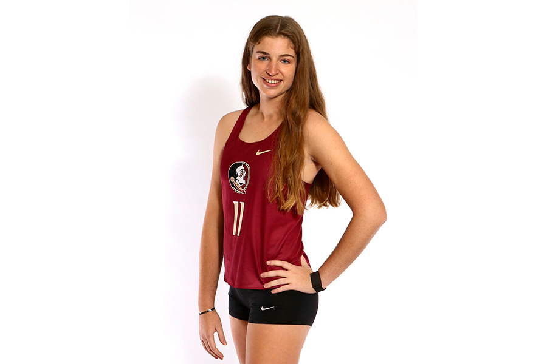
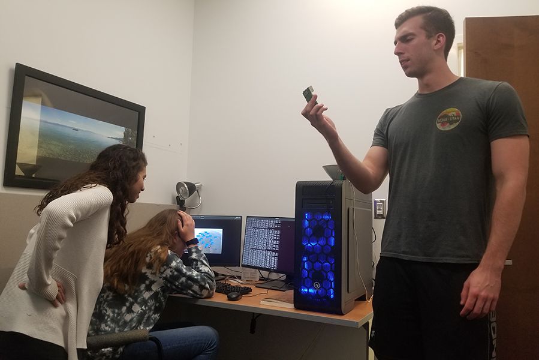
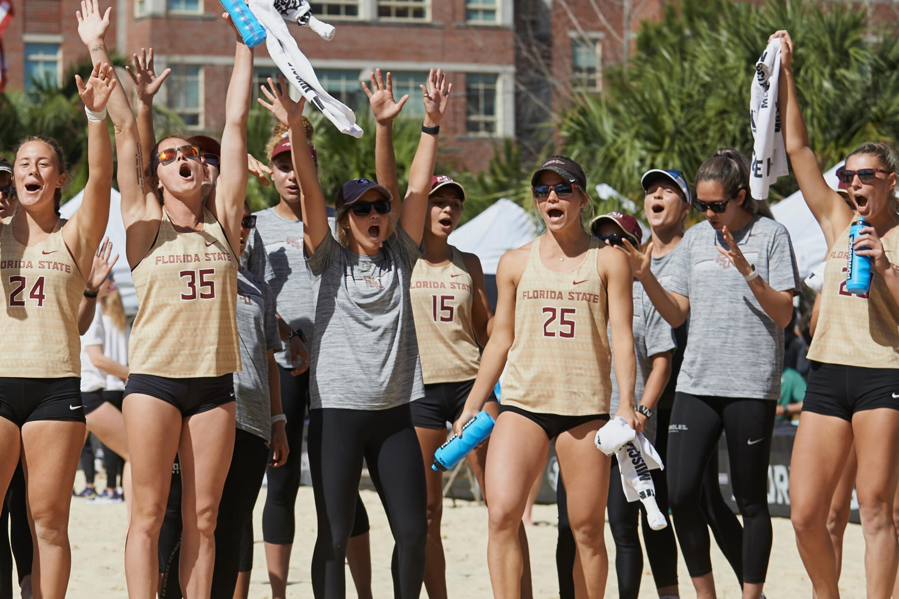
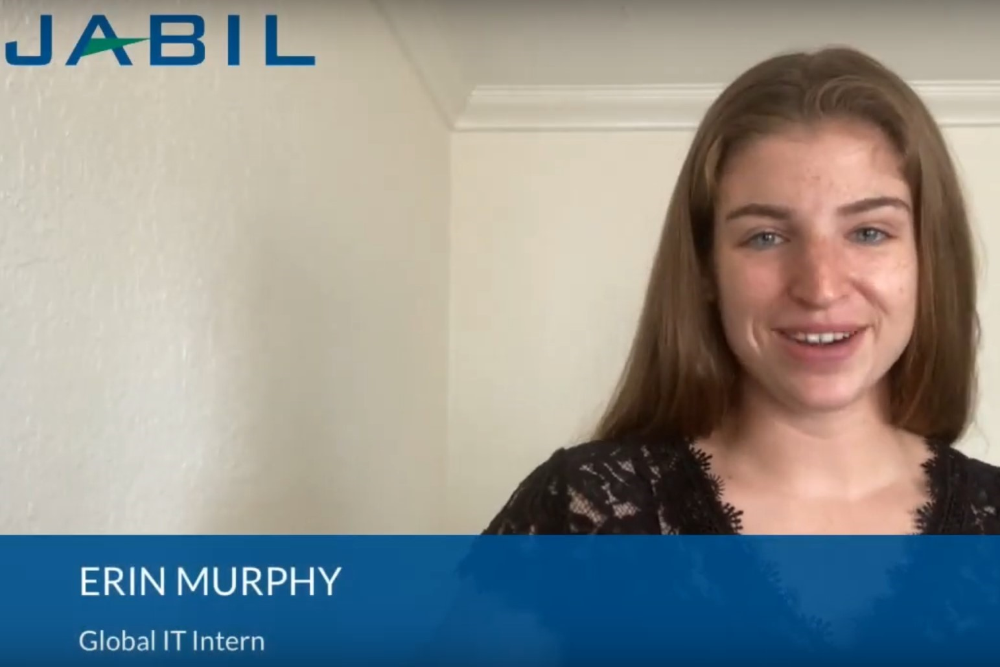

Florida State University
FSU Student Stars
Erin Murphy has made sure to seize every opportunity that has come her way at Florida State University. A native of St.
Petersburg, Fla., she came to FSU after graduating from St. Petersburg Collegiate High School as a salutatorian and with
an associate’s degree in hand. Murphy initially chose to attend FSU after being recruited to play Division I beach
volleyball...
Florida State University CCI
iSchool Professor Studies Artificial Intelligence
Dr. Jonathan Adams and his team of Computer Science students are working hard on developing applications for Artificial
Intelligence (AI). “We were awarded a grant by the Student Technology Fee Advisory Committee, which allowed us to buy a
computer designed for machine learning.” Dr. Adams explains...
Seminole Athletics
Beach Volleyball Wins Director’s Cup for Service
Murphy has completed 125 hours of community service while serving as FSU’s student liaison for Big Brother Big Sisters
of the Big Bend. She has shown an unwavering commitment to volunteering...
Jabil
Jabil Early Career Opportunities
Erin Murphy, Jabil Global IT Intern, shares information about her internship experience and what is special about Jabil
culture....